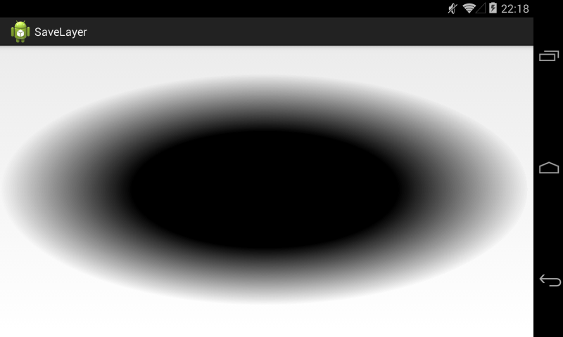
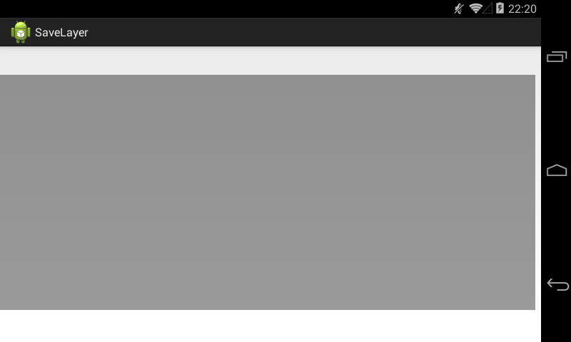
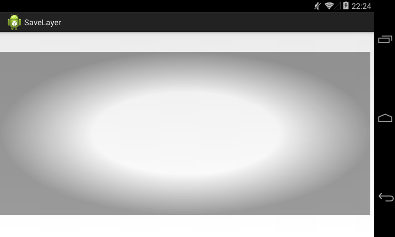

В этом уроке:
- используем метод Canvas.saveLayer
В Уроке 146 мы разбирались с методом save. С его помощью можно сохранить состояние канвы, выполнить различные преобразования и вернуться к сохраненному состоянию методом restore. Метод saveLayer создает отдельный от канвы Bitmap и переадресует ему все последующие операции канвы. А чтобы потом записать получившийся результат с Bitmap-а на канву, необходимо вызвать метод restore. Те, кто хотя бы минимально работал с графическими редакторами, могут провести аналогию со слоями. Вы создаете отдельный слой, рисуете на нем что-либо, затем сливаете его с основным изображением. Собственно, метод так и называется saveLayer – «сохранить слой».
Поначалу кажется, что этот метод – абсолютно бессмысленный. Какой смысл выделять отдельный слой, чтобы нарисовать на нем что-то и потом все равно вывести это на основной канве? Проще сразу на канве и рисовать. Оказывается, смысл есть. И сейчас мы разберем пример, после которого станет понятно, зачем может понадобиться этот механизм.
Возьмем картинку
и попробуем нарисовать такой эффект.
Т.е. на картинку наложена рамка. В центре рамка прозрачная, а к краям становится затемненной полупрозрачной.
Идею для примера я любезно спер отсюда. Но чтобы уж совсем не палиться, картинку взял другую.
План такой:
1) Выводим на канву картинку
2) Создаем слой, на котором нарисуем полупрозрачную рамку
3) Накладываем слой-рамку на картинку
Начнем с создания полупрозрачной рамки.
Класс MainActivity:
public class MainActivity extends Activity {
@Override
protected void onCreate(Bundle savedInstanceState) {
super.onCreate(savedInstanceState);
setContentView(new DrawView(this));
}
class DrawView extends View {
Paint mShaderPaint;
Paint mBlackPaint;
Paint mPaint;
Bitmap mBitmap;
Rect mRect = new Rect(0, 40, 750, 370);
RectF mRectF = new RectF(mRect);
public DrawView(Context context) {
super(context);
setLayerType(LAYER_TYPE_SOFTWARE, null);
init();
}
private void init() {
mShaderPaint = new Paint(Paint.ANTI_ALIAS_FLAG);
mShaderPaint.setShader(createShader());
}
@Override
protected void onDraw(Canvas canvas) {
canvas.drawOval(mRectF, mShaderPaint);
}
private Shader createShader() {
final int[] colors = new int[] { 0xff000000, 0xff000000, 0 };
final float[] anchors = new float[] { 0, 0.5f, 1 };
Shader shader = new android.graphics.RadialGradient(0, 0, 1,
colors, anchors, Shader.TileMode.CLAMP);
Matrix matrix = new Matrix();
matrix.postTranslate(mRect.centerX(), mRect.centerY());
matrix.postScale(mRect.width() / 2, mRect.height() / 2,
mRect.centerX(), mRect.centerY());
shader.setLocalMatrix(matrix);
return shader;
}
}
}В методе init создаем кисть и устанавливаем ей шейдер, созданный в методе createShader.
Для создания шейдера в createShader используем градиент-шейдер (Урок 165). Он черный (ff000000) в центре и будет становиться прозрачным (00000000) к краям. Обратите внимание, что мы создали его в точке (0,0) и радиусом он всего 1. Далее мы применяем к нему матрицу (Урок 144), чтобы поместить его в нужную точку и придать ему необходимые размеры.
mRect – это координаты прямоугольника, в котором будет выведена картинка. Соответственно центр градиента нам надо поместить в центр mRect, а размер градиента должен быть равен размеру mRect.
В методе onDraw нарисуем на экране овал, используя созданный шейдер.

Центр градиента находится в центре mRect-прямоугольника. А форма градиента, изначально круглая, немного сжата по вертикали, чтобы влезть в прямоугольник. Это результат работы матрицы.
Этот градиент мы сейчас будем использовать для создания необходимой нам рамки. Для этого мы возьмем полупрозрачный черный фон

и сверху нарисуем на нем градиент в режиме PorterDuff.Mode.DST_OUT (Урок 154).
Смотрим формулу расчета итоговых альфы и цвета для режима DST_OUT: [Da * (1 - Sa), Dc * (1 - Sa)].
В нашем случае:
Da - уровень прозрачности черного фона
Dc - цвет черного фона
Sa - уровень прозрачности градиента
Заметьте, что от градиента в формуле используется только альфа. Т.е. цвет там может быть хоть красно-зеленый. Он будет проигнорирован этим режимом наложения.
Т.е. там, где градиент наиболее непрозрачен, выражение (1 - Sa) стремится к нулю, а следовательно и стремятся к нулю итоговые значения альфы и цвета, полученные в результате наложения. И пикселы там будут максимально прозрачные.
А там, где градиент наименее прозрачен, выражение (1 - Sa) стремится к единице, а следовательно итоговые значения альфы и цвета стремятся к Da и Dc. Т.е. пикселы там будут такие же, что и в черном фоне.
В итоге мы получим черный фон с прозрачным центром, а края останутся почти без изменений.
Реализуем это в коде. Перепишем метод init:
private void init() {
mShaderPaint = new Paint(Paint.ANTI_ALIAS_FLAG);
mShaderPaint.setShader(createShader());
mShaderPaint.setXfermode(new PorterDuffXfermode(PorterDuff.Mode.DST_OUT));
mBlackPaint = new Paint(Paint.ANTI_ALIAS_FLAG);
mBlackPaint.setColor(Color.BLACK);
mBlackPaint.setAlpha(100);
}Добавляем DST_OUT к кисти шейдера. И создаем кисть с полупрозрачным черным цветом.
и метод onDraw:
@Override
protected void onDraw(Canvas canvas) {
canvas.drawRect(mRect, mBlackPaint);
canvas.drawOval(mRectF, mShaderPaint);
}Выводим фон, а на него овал с шейдером.
Мы получили слой с рамкой прозрачности.

Центр этой рамки не белый, а прозрачный, через него просто просвечивает белый фон.
Попробуем нарисовать все это на картинке сразу, без использования метода saveLayer.
Перепишем init:
private void init() {
mPaint = new Paint(Paint.ANTI_ALIAS_FLAG);
mBitmap = BitmapFactory.decodeResource(getResources(),
R.drawable.image);
mBitmap = Bitmap.createScaledBitmap(mBitmap, mRect.width(),
mRect.height(), true);
mShaderPaint = new Paint(Paint.ANTI_ALIAS_FLAG);
mShaderPaint.setShader(createShader());
mShaderPaint.setXfermode(new PorterDuffXfermode(
PorterDuff.Mode.DST_OUT));
mBlackPaint = new Paint(Paint.ANTI_ALIAS_FLAG);
mBlackPaint.setColor(Color.BLACK);
mBlackPaint.setAlpha(100);
}Добавляем создание картинки и обычной кисти для ее вывода.
и onDraw
@Override
protected void onDraw(Canvas canvas) {
canvas.drawBitmap(mBitmap, 0, 0, mPaint);
canvas.drawRect(mRect, mBlackPaint);
canvas.drawOval(mRectF, mShaderPaint);
}Рисуем сначала картинку, затем фон, затем овал.
Получилось не совсем то, что мы ожидали. Сама картинка в центре тоже стала прозрачной. Так произошло потому, что сначала на картинку мы нарисовали темный фон, получив просто затемненную картинку, а затем выполнили DST_OUT-наложение градиента. И это наложение повлияло на цвета и альфу самой картинки, сделав ее прозрачной в центре.
Именно поэтому необходимо создавать отдельный слой, рисовать там рамку и потом обычной кистью без всяких режимов рисовать ее поверх картинки. Проверим.
Перепишем onDraw:
@Override
protected void onDraw(Canvas canvas) {
canvas.drawBitmap(mBitmap, 0, 0, mPaint);
canvas.saveLayer(mRectF, mPaint, Canvas.ALL_SAVE_FLAG);
canvas.drawRect(mRect, mBlackPaint);
canvas.drawOval(mRectF, mShaderPaint);
canvas.restore();
}Рисуем картинку. Затем переключаемся на отдельный слой методом saveLayer, рисуем на нем рамку (фон + овал с градиентом в режиме DST_OUT) и методом restore накладываем эту рамку на картинку.
Результат:

Рамка легла сверху, обеспечив нужный уровень прозрачности и не затирая оригинал.
Если вы вместо метода saveLayer просто сами создадите Bitmap, нарисуете рамку на нем и потом просто наложите этот Bitmap поверх картинки, то вы получите тот же результат. В принципе, метод saveLayer именно это и делает, судя по его описанию в документацие.